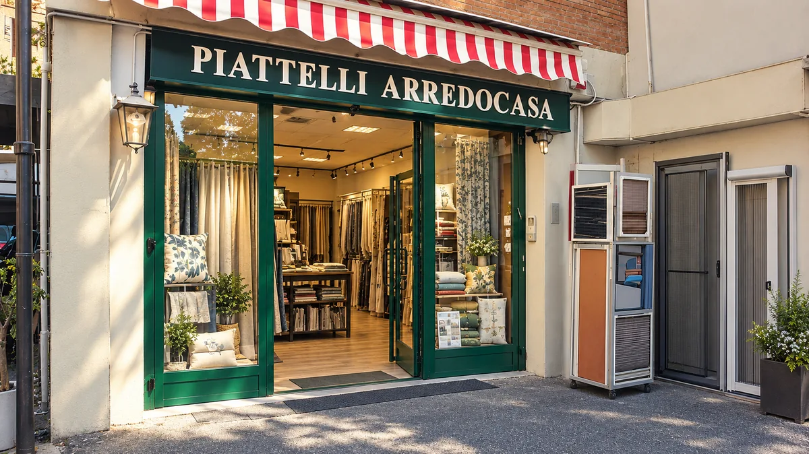

Sede principale · Laboratorio e vendita
Via Federico Tozzi, 21
📍 Roma
La sede principale Piattelli Arredocasa: laboratorio artigianale, magazzino, vendita al pubblico e lavorazioni su misura. Qui i nostri tappezzieri e le nostre sarte realizzano tendaggi, rivestimenti per divani e poltrone e soluzioni tessili per la casa.
- ✂️ Sartoria, tappezzeria e confezione diretta
- 🛋️ Tessuti e rivestimenti su misura
- 🅿️ Accesso comodo e parcheggio